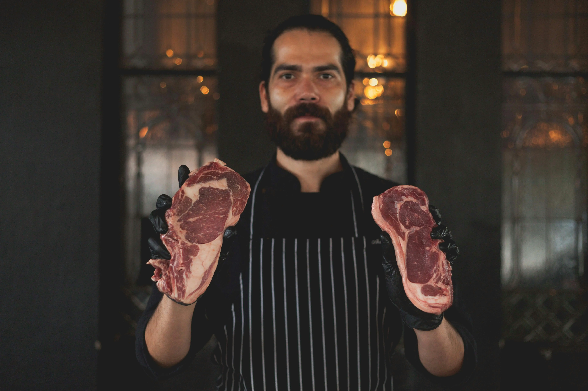
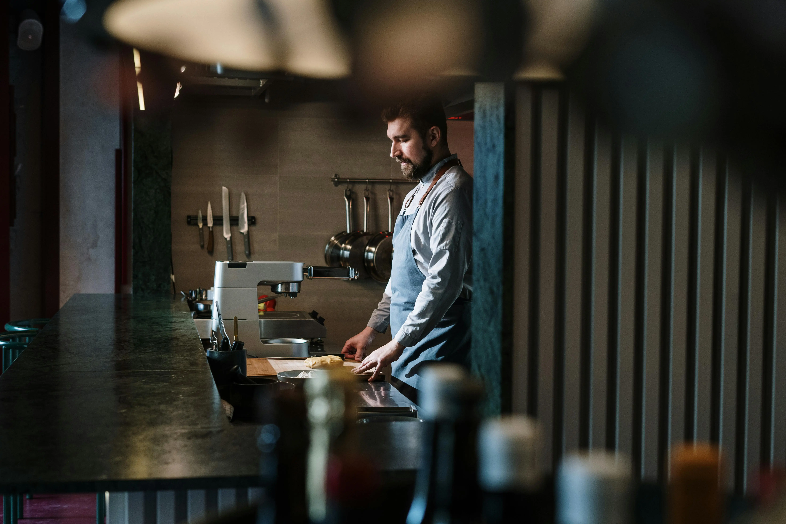

Températures de conservation des aliments : le guide complet 2026
Maîtriser les températures est l'obligation HACCP la plus contrôlée par les inspections sanitaires. Ce guide complet vous donne les tableaux réglementaires à jour, les températures de cuisson par aliment, les règles de refroidissement rapide et les bonnes pratiques pour ne jamais être pris en défaut lors d'un contrôle.

Pourquoi les températures sont-elles un point critique HACCP ?
En France, les toxi-infections alimentaires collectives (TIAC) touchent chaque année plus de 15 000 personnes déclarées — et ce chiffre ne représente qu'une fraction des cas réels, estimés à plus de 1,2 million par l'ANSES. La restauration collective et commerciale est responsable d'une part significative de ces épisodes, et dans la très grande majorité des cas, une mauvaise maîtrise des températures est en cause.
Les bactéries pathogènes responsables des intoxications alimentaires — Salmonella, Listeria monocytogenes, Escherichia coli entérohémorragique (STEC), Staphylococcus aureus, Campylobacter — se multiplient de façon exponentielle entre +4°C et +63°C. Dans cette plage, une population bactérienne peut doubler toutes les 20 minutes dans des conditions favorables.
La maîtrise des températures est donc un point critique de contrôle (CCP) au cœur de la démarche HACCP. Elle est encadrée par deux textes fondamentaux :
- Le règlement CE n°852/2004 relatif à l'hygiène des denrées alimentaires (applicable dans toute l'UE)
- L'arrêté du 21 décembre 2009 fixant les températures de conservation des denrées animales et d'origine animale en France
Lors d'une inspection sanitaire, les agents de la DDPP (Direction Départementale de la Protection des Populations) commencent systématiquement par relever les températures de vos équipements frigorifiques et vérifier votre registre de relevés. C'est souvent le premier motif de mise en demeure ou de fermeture administrative.
Tableau des températures de froid réglementaires
Le tableau ci-dessous récapitule les températures maximales de conservation à froid par catégorie de denrées, conformes à l'arrêté du 21 décembre 2009 :
| Catégorie de denrées | Température max. | Exemples pratiques | Durée max. conseillée |
|---|---|---|---|
| Denrées très périssables | + 4°C | Viandes hachées, steaks tartares, poissons crus, produits de la mer | 24 à 48h selon le produit |
| Viandes et abats frais | + 4°C | Bœuf, veau, porc, agneau, volaille entière | 3 à 5 jours |
| Charcuteries cuites tranchées | + 4°C | Jambon cuit, pâtés, rillettes, saucisses cuites | 3 à 4 jours après tranchage |
| Produits laitiers frais | + 4°C | Yaourts, fromages frais, crèmes fraîches, beurre | Jusqu'à la DLC |
| Plats cuisinés réfrigérés | + 4°C | Plats du jour en chambre froide, plats traiteur | 3 jours (J+3) |
| Fromages affinés | + 8°C | Camembert, brie, fromages à pâte pressée, croûte lavée | Jusqu'à la DLC |
| Fruits et légumes frais découpés | + 4°C | Salades en 4e gamme, crudités prêtes à l'emploi, fruits pelés | 24h à 3 jours |
| Œufs | + 8°C | Œufs en coquille (réfrigération recommandée dès réception) | Jusqu'à la DLC |
| Produits de la mer cuits | + 4°C | Crevettes cuites, moules, palourdes, crabe | 24 à 48h |
| Produits surgelés | − 18°C | Tout produit portant la mention "surgelé" | Jusqu'à la DDM |
| Produits congelés en cuisine | − 15°C | Produits congelés avec cellule de congélation propre | 1 à 3 mois selon le produit |
| Glaces et crèmes glacées | − 18°C | Glaces artisanales et industrielles | Jusqu'à la DDM |
* Températures réglementaires françaises conformes à l'arrêté du 21 décembre 2009 et au règlement CE n°852/2004. DLC = Date Limite de Consommation / DDM = Date de Durabilité Minimale.
Organisation des chambres froides : la règle de séparation
En restauration professionnelle, il est impératif de respecter la marche en avant et de séparer les denrées dans vos équipements frigorifiques :
- Chambre froide positive n°1 : viandes et poissons crus (séparés entre eux par des claies ou dans des bacs étanches)
- Chambre froide positive n°2 : produits laitiers, fromages, légumes, fruits
- Chambre froide n°3 / bac de service : plats cuisinés, charcuteries, préparations froides
Cette organisation évite les contaminations croisées entre allergènes et réduit les risques de contamination microbiologique des produits cuits par les produits crus.
Températures de cuisson recommandées par type d'aliment
La cuisson est l'étape la plus efficace pour éliminer les bactéries pathogènes. Encore faut-il atteindre la température à cœur suffisante. Contrairement aux idées reçues, la couleur d'une viande ne garantit pas sa salubrité : seul un thermomètre à sonde permet de vérifier la température au cœur de l'aliment.
Voici les températures à cœur recommandées par les autorités sanitaires françaises (ANSES) et européennes :
| Type d'aliment | Température à cœur min. | Remarques importantes |
|---|---|---|
| Volailles entières (poulet, dinde, canard) | +74°C | Vérifier dans la cuisse et dans la farce si farcie. Jus de cuisson doit être clair. |
| Volailles découpées (escalopes, cuisses) | +74°C | Température critique : la volaille est le principal vecteur de Campylobacter et Salmonella |
| Viandes hachées (steaks, boulettes, burger) | +70°C | La cuisson à cœur est obligatoire. Le burger "saignant" est interdit en restauration professionnelle (sauf dérogation pour dégustation immédiate) |
| Porc (rôti, côtelettes, filet) | +70°C | Élimine Trichinella spiralis et Toxoplasma gondii |
| Bœuf (rôti entier, pièces entières) | +63°C (mi-cuit) | La cuisson saignante est tolérée pour les pièces entières non injectées. Interdit pour le haché. |
| Agneau et veau (gigot, rôti) | +63°C | Rosé autorisé pour les pièces entières non reconstituées |
| Poissons et fruits de mer | +63°C | Pour les préparations crues (tartare, carpaccio, sushi), utiliser des produits ayant subi une congélation préventive à −20°C pendant 24h minimum |
| Œufs et préparations aux œufs | +70°C (blanc et jaune coagulés) | Pour les sauces à base d'œuf (hollandaise, béarnaise), maintien obligatoire à +63°C minimum |
| Plats farcis (rôtis, légumes farcis) | +74°C | Température mesurée au centre de la farce, pas dans la viande d'enrobage |
| Saucisses, merguez, chipolatas | +70°C | À cœur, pas seulement en surface. Erreur fréquente lors des buffets et événementiel. |
* Recommandations basées sur les données ANSES (Agence nationale de sécurité sanitaire), règlement CE n°2073/2005 sur les critères microbiologiques et arrêté du 21 décembre 2009.
Maintien en chaud et service à table
Une fois les aliments cuits, la vigilance ne s'arrête pas. Lors du service, les préparations chaudes doivent rester au-dessus du seuil critique de +63°C en permanence, que ce soit en cuisine, au comptoir de vente ou lors d'un buffet.
| Situation | Température min. | Matériel adapté |
|---|---|---|
| Maintien en service (côté cuisine) | + 63°C | Bains-marie, lampes infrarouge, armoires chauffantes |
| Service en salle (buffet chaud) | + 63°C | Chafing dishes avec combustible ou électriques, vitrines chauffantes |
| Transport de repas à domicile / traiteur | + 63°C | Conteneurs isothermes homologués, armoires de transport chauffantes |
| Remise en température (plat cuisiné refroidi) | + 63°C atteints en moins de 1h | Four à convection, bain-marie, micro-ondes professionnel |
| Durée maximale de maintien en chaud | — | 2h maximum à +63°C. Au-delà, le plat doit être jeté ou refroidi rapidement. |
En cas de buffet, contrôlez la température des préparations chaudes toutes les 30 minutes avec un thermomètre à sonde et notez les relevés. Si un plat descend en dessous de +63°C, remontez-le en température ou retirez-le du service. Cette mesure doit figurer dans votre Plan de Maîtrise Sanitaire (PMS).
La zone de danger thermique : de +4°C à +63°C
On appelle zone de danger thermique (ou zone critique de multiplication bactérienne) la plage de températures comprise entre +4°C et +63°C. Dans cette zone, les bactéries pathogènes trouvent des conditions idéales pour se multiplier : humidité, nutriments disponibles et températures favorables.
Quelques repères concrets pour comprendre les enjeux :
- À +20°C (température ambiante d'une cuisine), E. coli peut doubler en 20 minutes. En 6 heures, une contamination initiale de 100 bactéries peut atteindre plus de 4 millions d'unités.
- À +37°C (température corporelle), certaines souches de Salmonella ont un temps de génération de moins de 12 minutes.
- À +63°C, la grande majorité des bactéries pathogènes sont détruites en quelques secondes. À +70°C, la destruction est quasi-instantanée.
En pratique, cette règle s'applique dans plusieurs situations fréquentes :
- La décongélation à température ambiante (interdite) — un bloc de viande surgelé peut rester des heures en surface à +20°C pendant que le centre dégèle encore à 0°C.
- Les préparations froides laissées sur le plan de travail pendant le dressage des assiettes.
- Les plats cuisinés refroidis trop lentement dans un grand conteneur au réfrigérateur (l'extérieur refroidit vite mais le centre reste chaud longtemps).
Refroidissement rapide et décongélation : les règles à respecter
Le refroidissement rapide après cuisson
C'est l'une des étapes les plus critiques et les plus souvent mal maîtrisées en restauration. L'arrêté du 21 décembre 2009 impose de faire passer un aliment cuisiné de +63°C à +10°C en moins de 2 heures.
Le seul moyen fiable d'atteindre cet objectif en restauration professionnelle est la cellule de refroidissement rapide. Contrairement à une idée répandue, placer un grand plat chaud directement au réfrigérateur est insuffisant (et potentiellement dangereux pour les autres denrées) :
- Le centre d'un grand plat peut rester plusieurs heures au-dessus de +30°C
- La chaleur dégagée fait remonter la température générale de l'enceinte
- Cela crée une zone de danger pour tous les produits du réfrigérateur
Les règles de décongélation
La décongélation est une étape réglementée souvent négligée. En restauration professionnelle, vous n'avez que deux méthodes autorisées :
- En chambre froide positive à +4°C maximum — méthode la plus sûre, à anticiper (prévoir 24 à 48h selon l'épaisseur)
- Par cuisson directe — pour les produits pouvant être cuits directement congelés (légumes surgelés, portions individuelles)
Durée de conservation après décongélation
Un produit correctement décongelé en chambre froide doit être :
- Consommé dans les 24 heures pour les viandes hachées et poissons
- Consommé dans les 48 heures pour les viandes entières, volailles, fruits de mer
- Jamais recongelé, quelles que soient les circonstances
L'étiquetage de traçabilité doit mentionner "décongelé le [date]" pour permettre le suivi dans le cadre de votre système de traçabilité alimentaire.
Enregistrement des relevés de température

La réglementation HACCP ne se contente pas d'imposer des températures : elle exige que leur respect soit prouvé par des enregistrements. En cas de contrôle, l'absence de relevés est aussi grave que des températures hors normes.
Ce que dit la réglementation
- Fréquence minimale : 2 relevés par jour par équipement de froid (début et fin de service), et 1 relevé de cuisson par plat préparé
- Support autorisé : fiche papier ou logiciel de traçabilité numérique — les deux ont la même valeur légale
- Durée de conservation : les enregistrements doivent être conservés minimum 3 ans
- Accessibilité : disponibles immédiatement sur site lors d'une inspection
- Actions correctives : tout relevé hors norme doit être associé à une action corrective notée (déplacement de produits, appel du technicien, destruction de denrées)
Que faire en cas de relevé hors norme ?
Un relevé non conforme ne doit pas être effacé ou ignoré : il doit être signalé et traité selon la procédure d'actions correctives de votre PMS. Voici la marche à suivre :
- Identifier l'écart (température mesurée, heure, équipement)
- Évaluer les denrées concernées : depuis quand sont-elles hors température ? Ont-elles été dans la zone de danger plus de 2 heures ?
- Décider : consommation immédiate, refroidissement rapide ou destruction (avec traçabilité de la destruction)
- Alerter le responsable et appeler un technicien si l'équipement est défaillant
- Enregistrer l'action corrective dans le registre HACCP
Notre checklist HACCP inclut une fiche d'action corrective température prête à l'emploi.
Matériel de contrôle des températures
Disposer du bon équipement de mesure et de contrôle est une obligation réglementaire et un investissement rentable. Voici un tour d'horizon des outils indispensables en restauration professionnelle.
Thermomètre à sonde à lecture instantanée
Outil incontournable, il permet de vérifier la température à cœur des viandes, poissons et plats cuisinés en quelques secondes. Critères de choix :
- Plage de mesure : −50°C à +300°C minimum
- Précision : ±0,5°C
- Temps de réponse : moins de 3 secondes (modèles à thermocouple)
- Certification NSF ou EN 13485 recommandée
- Budget : 30 à 150 € pour un modèle professionnel fiable
Attention à bien désinfecter la sonde entre chaque utilisation et entre chaque type d'aliment pour éviter les contaminations croisées.
Thermomètre infrarouge (sans contact)
Pratique pour les contrôles rapides en surface (vitrines, plats de présentation), il ne remplace pas le thermomètre à sonde pour les mesures à cœur. Utilisez-le pour les vérifications de routine et la surveillance de surface.
Sondes d'ambiance avec enregistrement continu
Ces dispositifs, fixés à l'intérieur des enceintes frigorifiques, mesurent et enregistrent la température en continu. Les modèles connectés transmettent les données vers une application mobile ou un logiciel de gestion. Ils permettent :
- De supprimer les relevés manuels (gain de temps significatif)
- De détecter les anomalies nocturnes (pannes hors temps de service)
- De produire automatiquement les rapports de conformité
Cellule de refroidissement rapide
Obligatoire dans le cadre d'une production de plats cuisinés à l'avance, la cellule de refroidissement rapide fait passer les aliments de +63°C à +10°C en moins de 2 heures (mode positif) ou à −18°C en moins de 4 heures (mode négatif). Un équipement dont le coût est souvent sous-estimé mais qui sécurise l'ensemble de votre organisation de cuisine.
Sanctions en cas de non-conformité
Le non-respect des températures réglementaires peut entraîner des sanctions progressives, définies par le Code rural et de la pêche maritime et le règlement CE n°882/2004 relatif aux contrôles officiels :
| Niveau de sanction | Mesure applicable | Déclenchement |
|---|---|---|
| Niveau 1 | Avertissement oral lors de l'inspection | Non-conformité mineure isolée, première visite |
| Niveau 2 | Mise en demeure écrite avec délai de mise en conformité (15 à 30 jours) | Non-conformité notable, récidive sur point mineur |
| Niveau 3 | Procès-verbal transmis au procureur de la République + amende | Non-conformité grave ou récidive |
| Niveau 4 | Fermeture administrative temporaire (72h à plusieurs semaines) | Danger immédiat pour la santé des consommateurs |
| Niveau 5 | Sanctions pénales : jusqu'à 1 an d'emprisonnement et 15 000 € d'amende | Intoxication alimentaire avérée (article L237-1 du Code rural) |
Au-delà des sanctions légales, une intoxication alimentaire peut avoir des conséquences dramatiques sur votre activité : fermeture médiatisée, avis négatifs en ligne, perte de clientèle, hausse des primes d'assurance. Dans certains cas graves (décès ou hospitalisation longue), la responsabilité civile et pénale personnelle du gérant est engagée.
Questions fréquentes sur les températures en restauration
Quelle est la température réglementaire pour un réfrigérateur en restauration ?
La température d'un réfrigérateur professionnel doit être maintenue entre 0°C et +4°C pour les denrées les plus sensibles (viandes, poissons, produits laitiers frais, plats cuisinés). Certains produits comme les fromages affinés et les œufs entiers tolèrent jusqu'à +8°C. En pratique, visez +2°C à +3°C pour disposer d'une marge de sécurité.
À quelle température faut-il maintenir les plats chauds au service ?
Les plats chauds doivent être maintenus à une température minimale de +63°C durant toute la durée du service. En dessous de cette température, les bactéries peuvent se développer rapidement. La durée maximale de maintien en chaud est de 2 heures ; au-delà, le plat doit être jeté ou refroidi rapidement en cellule.
Quelle est la température de surgélation réglementaire ?
Les produits surgelés doivent être conservés à −18°C minimum. La chaîne du froid ne doit jamais être rompue lors du transport et du stockage. En cas de rupture accidentelle (panne frigorifique), les produits ne peuvent pas être recongelés — ils doivent être consommés immédiatement ou détruits.
Combien de fois par jour faut-il relever les températures ?
La réglementation impose un relevé minimum 2 fois par jour pour les équipements de froid (idéalement en début et en fin de service). Ces relevés doivent être consignés dans le registre HACCP et conservés pendant 3 ans. Pour les cuissons, un relevé par plat préparé est recommandé.
Quelle température à cœur pour une volaille cuite ?
Une volaille entière doit atteindre +74°C à cœur (mesurée dans la cuisse, loin de l'os). Pour les volailles farcies, la température s'applique au centre de la farce. Une volaille dont le jus de cuisson est encore rosé n'est pas forcément insuffisamment cuite — seul le thermomètre fait foi.
En combien de temps doit-on refroidir un plat cuisiné ?
L'arrêté du 21 décembre 2009 impose de faire passer un plat cuisiné de +63°C à +10°C en moins de 2 heures, via une cellule de refroidissement rapide. Ce délai est très difficile à respecter sans cet équipement. En cuisine, ne placez jamais un plat chaud directement au réfrigérateur : cela est insuffisant pour les grands volumes et dangereux pour les autres denrées.
Peut-on recongeler un produit décongelé ?
Non. La recongélation d'un produit décongelé est formellement interdite en restauration professionnelle (arrêté du 21 décembre 2009). En cas de rupture accidentelle de la chaîne du froid, le produit doit être consommé immédiatement ou jeté. La recongélation favorise la multiplication bactérienne et détériore les qualités organoleptiques du produit.
Quelle est la durée de vie d'un plat cuisiné en chambre froide ?
Un plat cuisiné correctement refroidi (de +63°C à +10°C en moins de 2h) et conservé à +4°C maximum peut être conservé 3 jours (J+3, en comptant le jour de fabrication comme J). Au-delà, il doit être jeté. La date et l'heure de fabrication doivent figurer sur l'étiquette de traçabilité. Certaines préparations (tartares, crudités) ont des durées encore plus courtes.